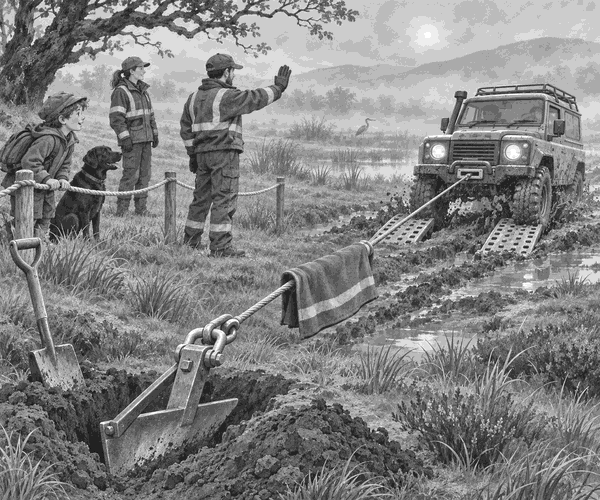

Rain had filled the ruts at Fox Marsh.
Ranger Mia drove slowly. Her green 4x4 carried food for the hill ponies.
Then the track gave a wet slurp.
The front wheels sank. Mia stopped at once.
“Spinning the tyres will only dig deeper,” she said.
Tom arrived with the recovery team. Scout the black Labrador sniffed the mud from behind a rope line.
“We need a strong point for the winch,” said Jo.
Tom looked around. There were no big trees. There were no heavy rocks.
Jo opened a box. Inside was a steel shape like a small plough.
“A ground anchor!” said Tom.
The team carried it to firm soil. They dug its blade into the earth.
Recovery fact: A ground anchor can give a winch a firm pulling point when there is no safe tree or rock nearby.
Next, the team laid wide boards under the front tyres.
Jo clipped the winch line to the anchor. She hung a heavy safety blanket over the cable.
Everyone moved well away.
“Ready!” called Jo.
The winch began to hum.
The anchor pressed hard into the soil. The cable pulled straight.
Mia used just a little power.
The tyres climbed onto the boards.
Squish. Grip. Roll!
The 4x4 rose out of the rut.
Scout gave one happy bark.
Mia checked the truck. Then the team filled the deep hole and packed away every tool.
At last, the pony food reached the hill.
Tom smiled at the muddy anchor.
It had not looked like much.
But under Fox Marsh, it had held like a giant hand.